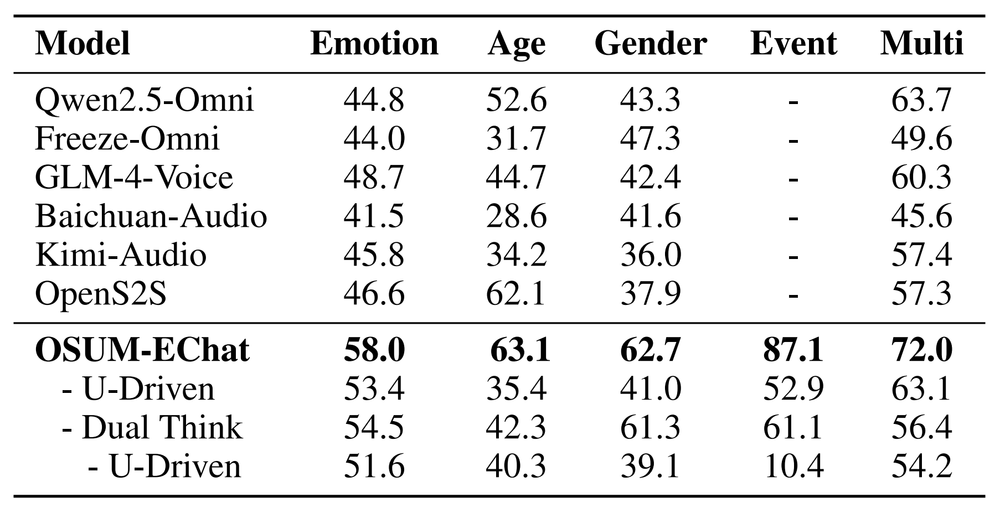
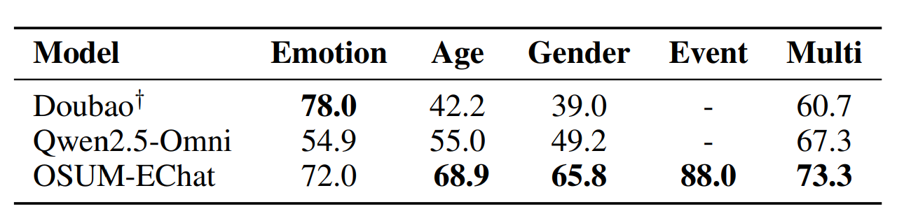
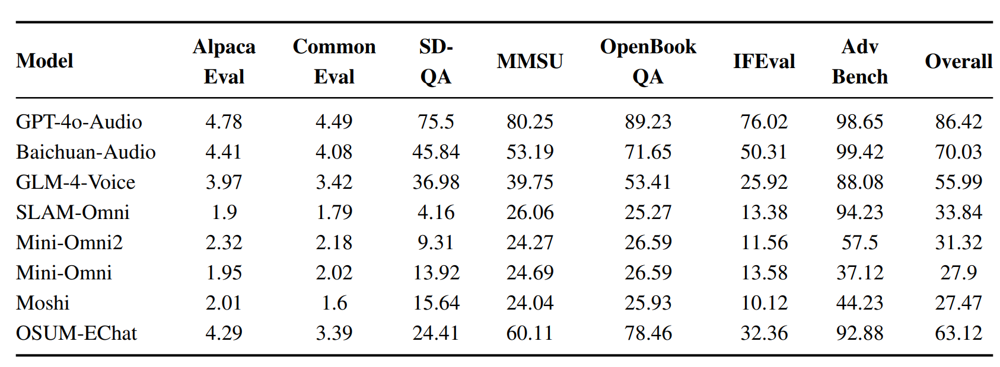
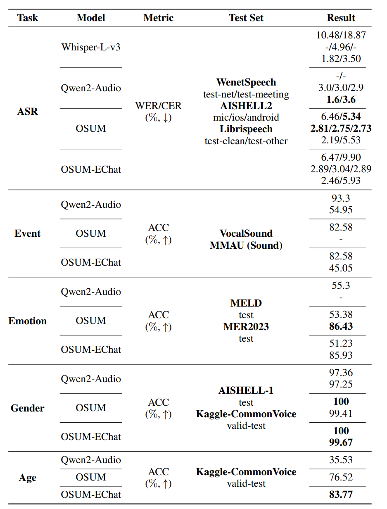
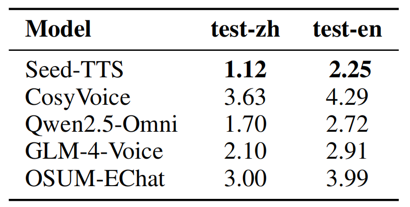

OSUM-EChat: Enhancing End-to-End Empathetic Spoken Chatbot via Understanding-Driven Spoken Dialogue
Audio, Speech and Language Processing Group (ASLP@NPU)
, School of Computer Science, Northwestern Polytechnical University

1. Abstract
Empathy is crucial in enabling natural interactions within spoken dialogue systems, allowing machines to recognize and respond appropriately to paralinguistic cues such as age, gender, and emotion. Recent advancements in end-to-end speech language models, which unify speech understanding and generation, provide promising solutions. However, several challenges persist, including an over-reliance on large-scale dialogue datasets, insufficient extraction of paralinguistic cues vital for conveying empathy, and the lack of empathy-specific datasets and evaluation frameworks. To address these issues, we introduce OSUM-EChat, an open-source, end-to-end spoken dialogue system designed to enhance empathetic interactions, particularly in resource-limited settings. Based on OSUM, OSUM-EChat introduces two key innovations: (1) a three-stage understanding-driven spoken dialogue training strategy that extends the capabilities of a large speech understanding model to spoken dialogue tasks, and (2) a linguistic-paralinguistic dual thinking mechanism that integrates paralinguistic understanding through a chain of thought with dialogue generation, enabling the system to produce more empathetic responses. This approach reduces reliance on large-scale dialogue datasets while maintaining high-quality empathetic interactions. Additionally, we introduce the EChat-200K dataset, a rich corpus of empathetic speech-to-speech dialogues, and the EChat-eval benchmark, a comprehensive framework for evaluating the empathetic capabilities of dialogue systems. Experimental results demonstrate that OSUM-EChat outperforms end-to-end spoken dialogue models regarding empathetic responsiveness, validating its effectiveness.

2. Demos
Check out the demo videos showcasing OSUM-EChat's capabilities.
3. Performance
Details about the performance benchmarks and capabilities of OSUM-EChat.
Empathetic Voice Dialogue
In the evaluation using the EChat-eval benchmark, OSUM-EChat demonstrated excellent performance in empathetic dialogue tasks. It achieved high GPT-4o automatic scores across various empathetic dialogue scenarios, particularly excelling in multi-label scenarios. Additionally, it showed strong capability in processing diverse acoustic events in input speech. Detailed results are presented in Table 1.
|

Table 1: Automatic evaluation results on EChat-eval benchmark. Here, 'U-Driven' refers to the understanding-driven spoken dialogue training strategy, and 'Dual Think' refers to the linguistic-paralinguistic dual think mechanism. |
Human evaluation results from EChat-eval further indicate that OSUM-EChat's overall performance surpasses Qwen2.5-Omni. It demonstrated excellent performance in empathetic dialogue test cases within the emotional dimension, though it still lags behind commercial systems. Notably, in empathetic dialogue tasks involving other paralinguistic dimensions (such as age, gender, sound events, etc.), commercial systems currently cannot effectively capture relevant cues. Detailed data is shown in Table 2.
Ablation experiment results verified that applying the speech understanding model (OSUM) to spoken dialogue tasks, combined with the "linguistic-paralinguistic dual thinking mechanism," can significantly enhance the model's empathetic dialogue capabilities. Specific verification data is presented in Table 1.
|

Table 2: Human evaluation results of representative models on the EChat-eval benchmark. † ByteDance's commercial system with response from a single fixed speaker. |
Basic Voice Capabilities
OSUM-EChat demonstrated excellent and stable performance in evaluations of three core voice capabilities: language intelligence, speech understanding, and speech synthesis. Detailed analyses are as follows:
(1) Language Intelligence
Leveraging large-scale text dialogue data and an internally constructed knowledge-based voice question-answering dataset, OSUM-EChat's language intelligence level is comparable to mainstream industry end-to-end voice dialogue models. Specific evaluation results for spoken question-answering tasks are shown in Table 3.
|

Table 3: Performance on VoiceBench Benchmarks. |
(2) Speech Understanding
This research verified OSUM-EChat's speech understanding capabilities on open-source test sets for five tasks: Automatic Speech Recognition (ASR), sound event recognition, emotion recognition, age recognition, and gender recognition. Results indicate that its performance is roughly equivalent to the speech understanding large model OSUM (with Qwen-7B as its LLM base) and approaches the level of the industrial-grade speech understanding model Qwen2-Audio.
|

Table 4: Performance of speech understanding tasks |
(3) Speech Synthesis
In this study, the Text-to-Speech (TTS) capability of OSUM-EChat was evaluated on the SEED test set. The results show that its TTS performance is superior to that of the CosyVoice model; however, there is still a gap when compared with industrial-grade voice dialogue models and professional TTS models. Detailed metrics (Word Error Rate, Character Error Rate) are presented in Table 5.
|

Table 5: Performance comparison between OSUM-EChat and recent spoken dialogue models on the SEED test set (Unit: %, ↓ indicates better performance of the metric) |